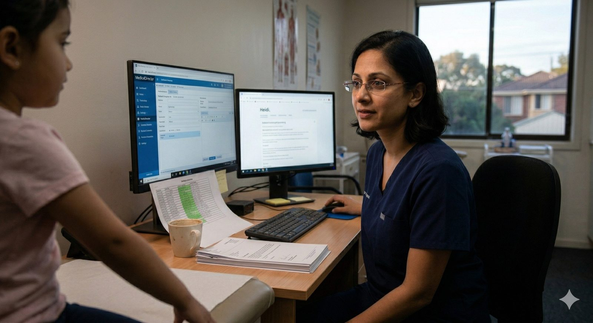
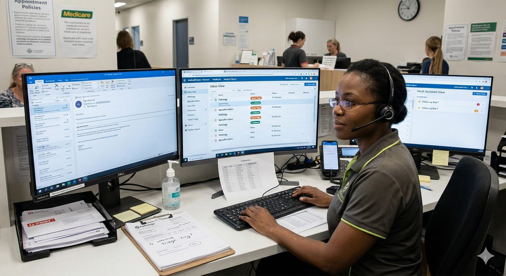
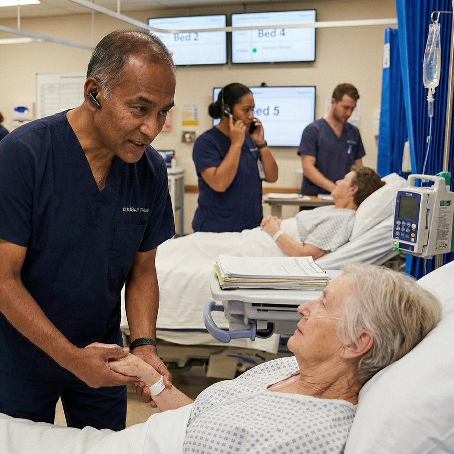
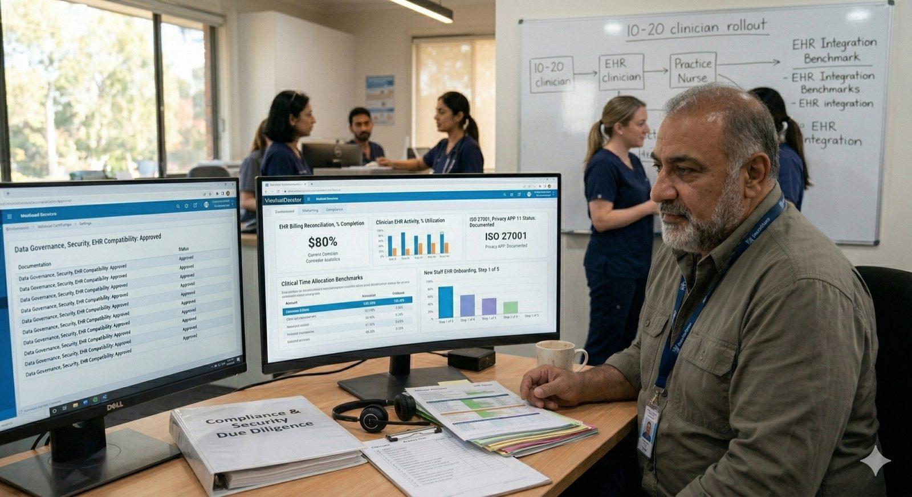

Who we serve
3 clinicians Heidi is built for, and 4 more who live with every decision we make.
Primary
Every roadmap argument starts with one of these three.

1GP / Independent Clinician
The Solo Clinician
“I just want to finish my notes before I get home. I don’t want to be typing at 9pm again.”
Specialties
General practice, family medicine, primary care
Environment
- Solo or small group clinic (1–5 doctors)
- 25–40 back-to-back appointments a day
- Heidi runs beside Best Practice, MedicalDirector or Zedmed
Jobs to be done
- Finish the note during or right after the appointment
- Turn one consult into note, letter, referral and task
- Document in their own clinical voice, not generic AI output
Pain points
- Notes spill into personal time — the #1 reason they try Heidi
- One appointment generates 3–5 separate documents
- EHR copy-paste friction slows down the last mile
ER Doctor / Hospitalist / Secondary Care
The High-Pressure Specialist
“I’m managing 12 patients at once and I can’t remember what I ordered for bed 7. I need a second brain, not another app.”
Specialties
Emergency medicine, general medicine, cardiology, surgery, oncology
Environment
- Hospital ED, inpatient ward or outpatient specialty clinic
- 8–15 patients at once, in a circular, non-linear flow
- Works inside Altera Sunrise, Cerner or Epic
Jobs to be done
- Capture clinical information without breaking focus
- Track tasks and orders across concurrent patients
- Produce discharge summaries and referrals at pace
Pain points
- The session-centric model assumes a linear consult
- Tasks are completed by nurses who cannot see them
- No urgency ordering — critical in triage
Psychologist / Psychiatrist
The Mental Health Clinician
“My notes need to capture the nuance of what was said. A summary isn’t enough — I need clinical language that actually reflects the presentation.”
Specialties
Clinical psychology, psychiatry, counselling, neuropsychology
Environment
- Private practice, hospital outpatient or psychology clinic
- 6–12 sessions a day, 50–90 minutes each
- Note-taking mid-session is often clinically inappropriate
Jobs to be done
- A post-session note (SOAP, DAP, progress) that keeps the nuance
- NDIS, Medicare and insurance correspondence, quickly
- Cut the 30–60 minutes of admin after every patient
Pain points
- Generic notes miss their orientation (CBT, ACT, psychodynamic)
- Highly sensitive content makes privacy a prerequisite, not a feature
- Structured forms (PHQ-9, K10, risk) are a core workflow gap
Secondary
Around every clinician sits a team. Two of them cannot open Heidi at all, which is exactly why they are here.
Practice Owner / Medical Director
The Practice Champion
“I need my whole team on this — it only works if everyone’s using it. I can’t have half the practice on Heidi and half still dictating.”
Specialties
General practice, primary care, mixed- and private-billing clinics
Environment
- Multi-GP clinic or corporate centre (5–50+ clinicians)
- Still sees patients, and carries P&L for the practice
- Watches transcription spend closely (\$60–80K+ a year)
Jobs to be done
- Get every clinician in the practice using Heidi consistently
- Replace the practice’s transcription service
- Standardise note and letter quality across clinicians
Pain points
- Sceptical partners and locums are the hardest internal sell
- Individual onboarding doesn’t scale
- The ROI case has to be concrete, not vague

5Receptionist / Admin / Medical Secretary
The Practice Admin
“My morning is 40 faxes, 20 results to route, and a pile of letters waiting to be sent. And that’s before the phone starts ringing.”
Specialties
GP clinics, specialist practices, day surgeries, outpatients
Environment
- Works across Best Practice, HealthLink, Medical-Objects, fax and email
- Non-clinical: correspondence, filing, dispatch, front desk
- Completely outside Heidi today
Jobs to be done
- Process inbound correspondence from a single view
- Send clinician-authored letters without reformatting
- See the clinician’s tasks without a verbal handover
Pain points
- Documents arrive through 4–6 incompatible channels
- Repetitive receive → triage → format → file handling
- Letter dispatch is manual even when Heidi wrote the letter

6Practice Nurse / Ward Nurse
The Clinical Support Worker
“The doctor generates the task. I’m the one who actually does it. But I can’t even see it in Heidi — I have to wait for them to tell me.”
Specialties
Practice nursing, ward nursing, outpatients, procedural clinics
Environment
- GP clinic, hospital ward or outpatient department
- Clinically trained; executes patient-facing follow-up
- Zero access to Heidi today
Jobs to be done
- See assigned tasks without being told verbally
- Action follow-ups and confirm completion
- Carry enough clinical context to act accurately
Pain points
- Locked out of Heidi — the biggest gap in the team workflow
- Verbal handover doesn’t scale on a busy ward
- No feedback loop back to the assigning clinician

7Clinic Operations / Practice Manager
The Practice Manager
“Clinicians come and go, but I’m the one who has to make sure everything actually runs. If this tool creates more tickets for me to handle, it’s not worth it.”
Specialties
Multi-GP clinics, corporate centres, specialist groups, day hospitals
Environment
- Manages 5–50+ staff; billing, compliance, EHR config, vendors
- Primary evaluator when the Champion wants to scale Heidi
- Becomes the Heidi admin owner after rollout
Jobs to be done
- Evaluate Heidi against security, compliance and EHR requirements
- Roll out to the clinical team with minimal disruption
- Monitor adoption and flag issues before they reach patients
Pain points
- Due diligence needs documented, shareable answers
- No repeatable onboarding path for 10–20 clinicians
- No visibility over who is actually using Heidi